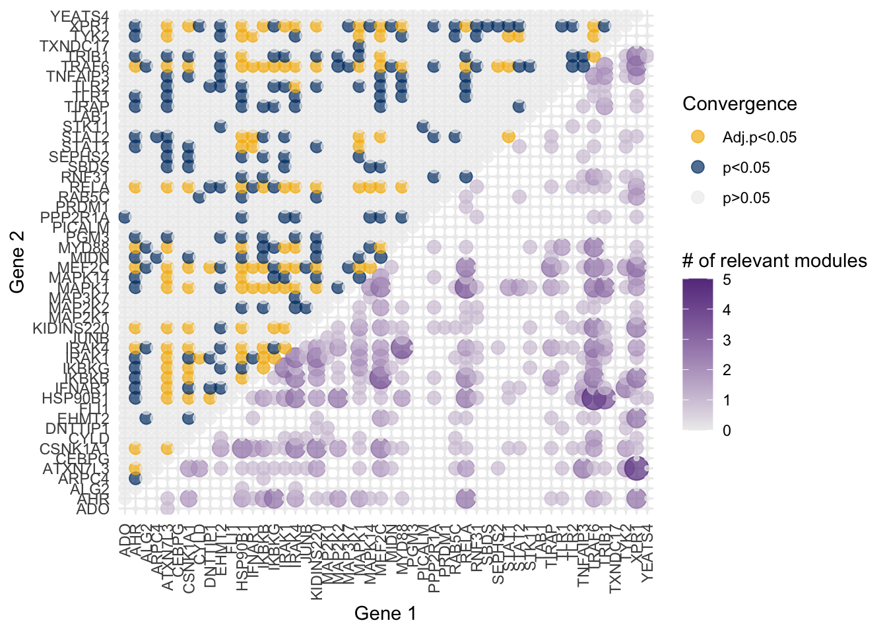

[1] "/Users/tianyuzhang/Documents/genetic_convergence_SA/yao_2023/code"Analysis pipeline of applying XConTest to Yao 2023
Data preprocessing
The original data can be downloaded from GEO.
source(file.path(code_directory, '01_subsetting_genes.R'),
local = TRUE)
source(file.path(code_directory, '02_remove_cell_cycle.R'),
local = TRUE)
source(file.path(code_directory, '03_structure_residuals.R'),
local = TRUE)
source(file.path(code_directory, '04_subsetting_perturbation.R'),
local = TRUE)Establishing the gene modules using CSCORE
source(file.path(code_directory, '31_establish_clustering.R'),
local = TRUE)Perform GO analysis to each gene module
source(file.path(code_directory, '32_GO_analysis.R'),
local = TRUE)Results of XConTest
Apply aggregated XConTest to all perturbations. Probably want to run this on a cluster.
system2("Rscript", file.path(code_directory, "51_systematic_process_all_in_paper_cluster.R"))
system2("Rscript", file.path(code_directory, "52_process_results_cluster.R"))Create igraph for each module.
source(file.path(code_directory, '54_graph_visualization.R'),
local = TRUE)Create the convergence plot for XConTest
source(file.path(code_directory, '91_overall_convergence_and_number_module.R'),
local = TRUE)
Warning in dir.create(file.path(work_directory, "paper_plots/data/"), recursive
= TRUE): '/Users/tianyuzhang/Documents/genetic_convergence_SA/paper_plots/data'
already existsWarning in dir.create(file.path(work_directory, "yao_2023/report/"), recursive
= TRUE): '/Users/tianyuzhang/Documents/genetic_convergence_SA/yao_2023/report'
already existsCreate the scLinker Plot by XConTest
source(file.path(code_directory, 'C1_scLinker_XConTest.R'),
local = TRUE)New names:
• `` -> `...2`
• `` -> `...3`
• `` -> `...4`[1] "Eczema"
[1] "(pos) Knock-out"
[1] TRUE
[1] "Primary biliary cirrhosis"
[1] "(pos) Knock-out"
[1] TRUE
[1] "Eosinophil percentage"
[1] "(pos) Knock-out"
[1] TRUE
[1] "Inflammatory bowel disease"
[1] "(pos) Knock-out"
[1] TRUE
[1] "Rheumatoid arthritis"
[1] "(pos) Knock-out"
[1] TRUE

Results of Dset
Apply Dset to all perturbations and all modules. Probably want to run this on a cluster.
system2("Rscript", file.path(code_directory, "A1_chen_method.R"))
system2("Rscript", file.path(code_directory, "A2_process_result.R"))Create the convergence plot for Dset
source(file.path(code_directory, 'A3_chen_convergence_and_number_module.R'),
local = TRUE)
Warning in dir.create(file.path(work_directory, "paper_plots", "data"), :
'/Users/tianyuzhang/Documents/genetic_convergence_SA/paper_plots/data' already
existsPerturbation pairs of more interest
source(file.path(work_directory, 'R/collect_and_structure_results.R'))Examine perturbation pairs with more convergent modules
source(file.path(code_directory, 'B1_collect_many_module_converge.R'),
local = TRUE)Warning in dir.create(paste0(work_directory,
"/yao_2023/report/B1_interesting_pairs/")):
'/Users/tianyuzhang/Documents/genetic_convergence_SA/yao_2023/report/B1_interesting_pairs'
already existsCreate igraph for perturbations with \(\geq 3\) convergent modules.
source(file.path(code_directory, 'B2_create_perturbation_igraph.R'),
local = TRUE)IGRAPH b599058 UNW- 18 31 --
+ attr: name (v/c), weight (e/n)
+ edges from b599058 (vertex names):
[1] AHR --RELA ATXN7L3 --XPR1 CSNK1A1 --HSP90B1
[4] CSNK1A1 --IRAK4 CSNK1A1 --KIDINS220 CSNK1A1 --MEF2C
[7] HSP90B1 --IRAK4 HSP90B1 --TRAF6 HSP90B1 --RELA
[10] HSP90B1 --TRIB1 IFNAR1 --TYK2 IKBKB --IRAK4
[13] IKBKB --MEF2C IKBKB --TRAF6 IKBKB --RELA
[16] IKBKB --XPR1 IKBKG --IRAK1 IRAK1 --IRAK4
[19] IRAK1 --KIDINS220 IRAK4 --MYD88 IRAK4 --TRAF6
[22] KIDINS220--TRAF6 KIDINS220--XPR1 MAPK1 --MEF2C
+ ... omitted several edges
Number of vertices: 18
Number of edges: 31 Warning in dir.create(paste0(work_directory,
"/yao_2023/report/B2_perturbation_igraph/"), :
'/Users/tianyuzhang/Documents/genetic_convergence_SA/yao_2023/report/B2_perturbation_igraph'
already existsExamine selected perturbation pairs
source(file.path(code_directory, 'B3_venn_diagram.R'),
local = TRUE) comparison p_value active_group gene1 gene2
<char> <num> <char> <char> <char>
1: HSP90B1_vs_TRAF6 4.323487e-22 5/6/13/14/17 HSP90B1 TRAF6
2: HSP90B1_vs_TRIB1 6.516131e-10 6/11/13/14/20 HSP90B1 TRIB1
3: TRAF6_vs_HSP90B1 3.661131e-43 1/3/4/5/6/8/13/14/17 TRAF6 HSP90B1
4: TRAF6_vs_TRIB1 5.401929e-08 1/4/6/13/14 TRAF6 TRIB1
5: TRIB1_vs_HSP90B1 1.126643e-25 6/11/14/15/20 TRIB1 HSP90B1
6: TRIB1_vs_TRAF6 1.091713e-18 6/14/15/20 TRIB1 TRAF6
comparison p_value active_group gene1 gene2
<char> <num> <char> <char> <char>
1: STAT1_vs_STAT2 2.934222e-42 22/30/31 STAT1 STAT2
2: STAT1_vs_TYK2 1.214899e-22 22/31 STAT1 TYK2
3: STAT2_vs_STAT1 1.543556e-17 31 STAT2 STAT1
4: STAT2_vs_TYK2 5.005220e-22 22/31 STAT2 TYK2
5: TYK2_vs_STAT1 1.583814e-13 31 TYK2 STAT1
6: TYK2_vs_STAT2 1.323856e-30 6/31 TYK2 STAT2Create the scLinker Plot by Dset
source(file.path(code_directory, 'C2_scLinker_Dset.R'),
local = TRUE)Create the LOEUF Plot
source(file.path(code_directory, 'C3_hist_LOEUF.R'),
local = TRUE)